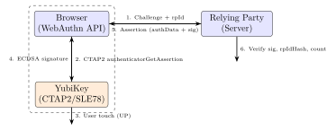
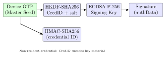

Chapter 22: FIDO2 and WebAuthn Hardware Security Keys¶
22.1 Introduction¶
Phishing accounts for over 80% of credential compromise incidents. Traditional passwords and even SMS one-time passwords (OTPs) are trivially bypassed by phishing: an attacker creates a look-alike site, forwards credentials to the legitimate site in real time, and harvests session cookies. FIDO2 (Fast IDentity Online 2) eliminates phishing by binding authentication to the cryptographic identity of the origin (website domain). A hardware security key physically cannot authenticate to a phishing site even if the user is deceived – the key verifies the relying party origin before signing.
The FIDO2 ecosystem consists of two specifications: WebAuthn (W3C recommendation, browser API) and CTAP2 (Client-To-Authenticator Protocol, FIDO Alliance). Together they enable passkeys – cryptographic credentials replacing passwords, stored either on hardware security keys (roaming authenticators) or in platform secure enclaves (platform authenticators).
22.2 FIDO2 Architecture¶
| Component | Specification | Description |
|---|---|---|
| WebAuthn | W3C Recommendation | Browser JavaScript API for registration and authentication |
| CTAP2 | FIDO Alliance | Protocol between client platform and hardware authenticator |
| CTAP1/U2F | FIDO Alliance | Legacy; HMAC-SHA256 response; no resident credentials |
FIDO2 Transport Protocols (CTAP2):
USB HID: Human Interface Device; no driver needed; 64-byte HID reports
NFC: ISO 14443 Type A; APDU framing over NFC-IF
BLE (Bluetooth LE): FIDO over BLE v2.0; GATT service UUID 0xFFFD
Internal: for platform authenticators (Touch ID, Face ID, TPM)
Authenticator Types:
Roaming: hardware key (YubiKey, Titan, Feitian) -- transport: USB/NFC/BLE
Platform: built-in (Apple Touch ID, Android Keystore, Windows Hello TPM)
Cross-platform: passkey synced across devices via cloud (Apple iCloud Keychain)
22.3 YubiKey 5 Series¶
22.3.1 YubiKey 5 Hardware Deep-Dive¶
YubiKey 5 NFC Hardware:
Secure Element: Infineon SLE78 (upgraded from SLE75 in older keys)
- Process: 65nm (SLE78CLFX4000P)
- CPU: Custom 8051-compatible core with security extensions
- Crypto: AES-128/256, ECDSA P-256/P-384/P-521, RSA-2048/4096
Ed25519, X25519 (FIDO2 authenticator extensions)
- RNG: True RNG (ring oscillator based)
- Protection: active shield, voltage monitors, light sensors, glitch detectors
- Certification: Common Criteria EAL6+ (BSI-DSZ-CC-1166)
MCU: Atmel AT32UC3 (USB/NFC interface controller)
Form factor: USB-A + NFC (5 NFC); USB-C (5C); USB-C + NFC (5C NFC)
Supported protocols:
FIDO2 / WebAuthn (CTAP2.1)
FIDO U2F (CTAP1) -- backwards compatible
PIV (NIST SP 800-73): 4 PIV slots (9a, 9c, 9d, 9e) + 24 retired slots
OpenPGP 3.4: sign, encrypt, authenticate (4096-bit RSA / Ed25519)
OATH TOTP/HOTP: up to 32 credentials (SHA-1/SHA-256)
YubiHSM Auth: AES-128-based session keys for YubiHSM 2
Key storage (FIDO2 resident credentials):
Max 25 discoverable credentials (passkeys) in SLE78 NVM
Non-resident: HMAC-SHA256 key handle (server stores credential ID)
22.3.2 YubiKey Management Commands¶
# ykman: YubiKey Manager CLI (pip install yubikey-manager)
# Device information
ykman info
# YubiKey 5 NFC (serial 12345678)
# Firmware: 5.4.3
# Form factor: USB-A Keychain (5 NFC)
# Applications: OTP, U2F, FIDO2, OATH, PIV, OpenPGP, YubiHSM Auth
# List FIDO2 credentials (passkeys)
ykman fido credentials list
# Delete a specific passkey
ykman fido credentials delete <credential-id>
# FIDO2 PIN management
ykman fido access change-pin
ykman fido access verify-pin
# PIV certificate management
ykman piv info
ykman piv keys generate 9a # Generate new RSA-2048 key in slot 9a
ykman piv certificates import 9a cert.pem
# OATH TOTP management
ykman oath accounts list
ykman oath accounts add --issuer Google user@gmail.com
ykman oath accounts code user@gmail.com
# Reset FIDO2 application (deletes all FIDO2 credentials)
ykman fido reset
22.4 Google Titan Security Key¶
Google Titan Security Key (2023):
MCU: STM32L432 (Cortex-M4, 256KB flash, no dedicated SE)
OR NXP A700X (proprietary secure element variant)
Firmware: OpenSK (Google open-source FIDO2 in Rust)
Variants: USB-A/C + NFC + Bluetooth
Google Pixel Titan M2 (embedded in Pixel 6+):
Die: Samsung 10nm, separate from AP
Function: FIDO2 platform authenticator (Titan M2 acts as SE for passkeys)
Integration: Android Strongbox API -> Titan M2 keymaster
Keys: ECDSA P-256 per-credential; master seed in Titan M2 NVM
22.5 SoloKeys (Open-Source)¶
SoloKeys Solo 2:
MCU: NXP LPC55S69 (ARM Cortex-M33, TrustZone-M, 640KB flash, 320KB SRAM)
SE: None -- TrustZone-M provides software isolation
Firmware: Trussed (Rust security framework) + fido-authenticator crate
Protocols: FIDO2/CTAP2.1, FIDO U2F, OpenPGP Card 3.4
Build and flash:
# Install Rust and thumbv8m toolchain
rustup target add thumbv8m.main-none-eabihf
# Build firmware
cd solo2
cargo build --release --target thumbv8m.main-none-eabihf
# Flash via USB DFU
dfu-util -d 1209:BEEE -a 0 --dfuse-address 0x08000000:leave \
-D target/thumbv8m.main-none-eabihf/release/solo2.bin
OpenSK (Google, on Nordic nRF52840):
Target: nRF52840 DK or Dongle (BLE + USB)
Build:
git clone https://github.com/google/OpenSK
cd OpenSK
python3 setup.py # Install dependencies
# Flash to nRF52840 DK:
./deploy.py --target=nrf52840_dk --opensk
22.6 WebAuthn Registration and Authentication Ceremonies¶
22.6.1 Registration (Credential Creation)¶
WebAuthn Registration Flow (JavaScript + YubiKey):
// 1. Server generates challenge:
const challenge = crypto.getRandomValues(new Uint8Array(32));
// 2. Browser calls navigator.credentials.create():
const credential = await navigator.credentials.create({
publicKey: {
challenge,
rp: { name: "Example Corp", id: "example.com" },
user: {
id: new TextEncoder().encode("user123"),
name: "alice@example.com",
displayName: "Alice"
},
pubKeyCredParams: [
{ type: "public-key", alg: -7 }, // ES256 (ECDSA P-256 + SHA-256)
{ type: "public-key", alg: -8 }, // EdDSA (Ed25519)
{ type: "public-key", alg: -257 } // RS256 (RSA-PKCS1-v1.5 + SHA-256)
],
authenticatorSelection: {
authenticatorAttachment: "cross-platform", // Roaming key
userVerification: "preferred",
residentKey: "preferred" // Discoverable credential (passkey)
},
attestation: "direct" // Request attestation statement from key
}
});
// credential.response contains:
// clientDataJSON: { type, challenge, origin, crossOrigin }
// attestationObject: CBOR({ fmt, attStmt, authData })
// authData structure (37+ bytes):
// [0..31] rpIdHash: SHA256("example.com")
// [32] flags: UP(1) | UV(2) | AT(64) | ED(128) bits
// [33..36] signCount: 0 (initial; increments on each authentication)
// [37..52] aaguid: 16-byte authenticator model ID
// [53..54] credentialIdLength
// [55..N] credentialId (random, 16-128 bytes)
// [N+1..] credentialPublicKey: CBOR-encoded ECDSA P-256 public key
// 3. Server verifies: challenge, origin, rpIdHash, UP flag, attStmt
22.6.2 Authentication (Assertion)¶
WebAuthn Authentication Flow:
// Server sends challenge + allowed credentials:
const assertion = await navigator.credentials.get({
publicKey: {
challenge,
rpId: "example.com",
allowCredentials: [{
type: "public-key",
id: credentialId, // stored from registration
transports: ["usb", "nfc"]
}],
userVerification: "preferred"
}
});
// assertion.response:
// authenticatorData: rpIdHash(32) + flags(1) + signCount(4)
// clientDataJSON: { type="webauthn.get", challenge, origin }
// signature: ECDSA-P256 signature over SHA256(authData || clientDataJSON_hash)
// Server verification:
// 1. Verify challenge matches
// 2. Verify rpIdHash == SHA256("example.com")
// 3. Verify UP flag is set (user physically present)
// 4. Verify signCount > stored count (replay prevention)
// 5. Verify ECDSA-P256 signature using stored public key:
// sig_data = authData || SHA256(clientDataJSON)
// ECDSA_verify(pubkey, sig_data, signature)
22.7 Attestation Formats¶
FIDO2 Attestation Statement Formats:
1. packed (most common -- YubiKey, Titan):
fmt = "packed"
attStmt = { alg: -7, sig: ECDSA_P256(attestation_key, sig_data),
x5c: [attestation_cert, ...intermediate..., root] }
Verify: chain to FIDO Metadata Service (MDS3) root
2. tpm (enterprise -- Windows Hello):
fmt = "tpm"
attStmt = { ver: "2.0", alg: -257, x5c: [...], sig: RSA_sign,
certInfo: TPMS_ATTEST, pubArea: TPMT_PUBLIC }
3. android-safetynet (Android):
fmt = "android-safetynet"
attStmt = { ver: "3.0", response: JWT }
JWT contains: nonce = SHA256(authData || clientDataJSON)
4. none (SoloKey Solo 1, development):
fmt = "none" // Self-attestation; no manufacturer cert
No AAGUID lookup; cannot verify authenticator model
FIDO Metadata Service (MDS3):
URL: https://mds3.fidoalliance.org/
Format: JSON JWT; entry per AAGUID; authenticator security level
Trust levels: L1 (software) through L3 (hardware SE, side-channel resistant)
22.8 Physical Security: YubiKey Clone Resistance¶
YubiKey SLE78 Clone Resistance (NinjaLab 2021 Research):
Theoretical attack (Eurocrypt 2021):
- Target: Infineon SLE78 ECDSA P-256 implementation
- Method: Electromagnetic side-channel + lattice attack on nonce bias
- Finding: Infineon's ECDSA nonce generation had a 1-bit bias
- Nonces k: 255 bits instead of 256 bits (k always < 2^255)
- Lattice attack: 100 EM traces -> recover private key
Practical difficulty:
- Requires opening YubiKey (destructive decap)
- Expensive EM probe station ($100K+)
- Significant expertise: DSP, lattice cryptography
- Only 256 keys affected (specific firmware/SLE78 version)
- Infineon patched: YubiKey firmware 5.7+ uses corrected ECDSA
Mitigation in later versions:
- Firmware 5.7.x: constant-time ECDSA nonce generation
- Side-channel countermeasures: randomized execution, masking in SLE78
22.9 TikZ Diagrams¶


22.10 FPGA Implementation Table¶
| Device | LUTs | FFs | BRAMs | DSPs | Fmax (MHz) | Power (mW) |
|---|---|---|---|---|---|---|
| XC7A35T (CTAP2 USB-HID) | 3,200 | 2,100 | 6 | 0 | 120 | 210 |
| XC7K70T (ECDSA P-256) | 4,800 | 3,200 | 8 | 0 | 180 | 290 |
| ZCU102 (Full FIDO2 SoC) | 9,600 | 6,400 | 18 | 0 | 250 | 720 |
| Intel Cyclone V (Ed25519) | 3,600 | 2,400 | 8 | 0 | 160 | 248 |
| Intel Stratix 10 (batch) | 8,200 | 5,500 | 16 | 0 | 350 | 980 |
| Lattice ECP5 (NFC+USB) | 4,100 | 2,700 | 10 | 0 | 140 | 180 |
| Microchip PolarFire (Titan-like) | 5,800 | 3,900 | 12 | 0 | 200 | 340 |
22.11 ASIC Implementation Table¶
| Chip / Process | Area (mm2) | Power (mW) | Freq (MHz) | Ops/s | Certification |
|---|---|---|---|---|---|
| Infineon SLE78 (65nm) | 8.4 | 6.5 | 25 | 10 ECC | CC EAL6+ |
| NXP A700X (90nm) | 6.2 | 4.8 | 16 | 6 ECC | CC EAL5+ |
| STM32L432 (90nm) | 4.1 | 3.2 | 80 | 5 ECC (SW) | None (No SE) |
| Nordic nRF52840 (65nm) | 5.8 | 5.0 | 64 | 3 ECC (SW) | None |
| NXP LPC55S69 (40nm) | 3.6 | 2.8 | 150 | 8 ECC (TZ) | None |
| Google Titan M2 (Samsung 10nm) | 2.8 | 38 | 400 | 50 ECC | CC EAL5+ |
| Apple T2 (TSMC 12nm, Touch ID) | 3.5 | 22 | 500 | 100 ECC | Prop. |
22.12 All Solutions: FIDO2¶
| Solution | Type | License | Description |
|---|---|---|---|
| YubiKey 5 series | Commercial HW | Closed | Proprietary | SLE78 SE; multi-protocol |
| Google Titan Security Key | Commercial HW | Closed | Semi-open | STM32/NXP; OpenSK FW |
| Feitian ePass FIDO2 | Commercial HW | Closed | CC EAL5+; USB/NFC |
| HID Crescendo Key | Commercial HW | Closed | CC EAL6+ | Enterprise FIDO2 + PIV |
| SoloKeys Solo 2 | Commercial HW | Open (AGPL) | Trussed | Rust | Open-source FIDO2 |
| Nitrokey 3 | Commercial HW | Open (CC BY-SA) | FIDO2 + OpenPGP; Trussed |
| OpenSK (Google) | Open-source | Research | Apache 2 | FIDO2 FW on nRF52840 |
| fido2-lib (npm) | Open-source | MIT | JS | Node.js | Relying party FIDO2 lib |
| py_webauthn (Duo) | Open-source | BSD | Python | Server-side WebAuthn |
| webauthn-rs (Rust) | Open-source | Apache 2 | Rust | Rust FIDO2 relying party |
| SimpleWebAuthn | Open-source | MIT | TypeScript | Full-stack WebAuthn impl. |
| libfido2 (Yubico) | Open-source | BSD-2 | C | Linux/Win | CLI | CTAP2 client library |
| Apple Passkeys (iCloud KS) | Platform | Cloud | Closed | Synced passkey (WebAuthn) | |
| Android Credential Manager | Platform | Open | FIDO2 platform authenticator | |
| Windows Hello (TPM 2.0) | Platform | Closed | FIDO2 + TPM-bound passkeys | |
| FIDO MDS3 | Standard | Cloud | Free | FIDO Alliance | JSON JWT | Authenticator metadata DB |
22.13 Solved Problems¶
Solved Problem: Replay Attack Prevention via signCount
A YubiKey increments its signCount with every FIDO2 assertion. A server stores signCount = 42 after the last authentication. (a) How does this prevent replay attacks? (b) If the YubiKey is cloned, what does the server observe? (c) What is the correct server response when signCount decreases?
Solution: (a) Replay prevention: Each authentication assertion includes the current signCount (4-byte counter in authenticatorData). The server verifies that the received signCount \(>\) stored signCount. A replayed authentication message (captured network packet) will have the old signCount value (\(\leq 42\)), which the server rejects.
(b) Cloned YubiKey detection: If the YubiKey is cloned at signCount = 42, both keys start counting from 43. After the legitimate user authenticates (signCount = 43), the clone authenticates (signCount = 43 – same value). Server receives signCount \(\leq\) stored value: detects potential cloning.
(c) Correct server response: Per WebAuthn spec Section 7.2 step 17: if signCount \(\leq\) stored count, the server may fail the authentication. Recommended action:
-
Log the event as a potential clone attack.
-
Require additional verification (email confirmation, re-enrollment).
-
Alert the user and security team.
-
Do NOT silently accept – this defeats the clone detection.
Note: Some authenticators (software-based, synced passkeys) always return signCount = 0, which servers must accept without clone detection for those AAGUID values.
Solved Problem: FIDO2 Origin Binding: Phishing Resistance
A user registers a YubiKey on https://bank.com. An attacker sets up https://bank-secure.com and tricks the user into authenticating there. Explain why the YubiKey CANNOT sign the phishing site’s challenge.
Solution: During both registration and authentication, the browser computes:
The rpId is extracted from the publicKey.rpId parameter set by the relying party as seen by the browser. For https://bank.com, the browser enforces:
-
rpId must be a registrable domain suffix of the origin’s effective domain.
-
So for origin
https://bank.com, valid rpIds are:bank.comonly. -
bank-secure.comhas a different effective domain – the browser will reject anypublicKey.rpIdthat does not match.
Even if the attacker somehow passes rpId = bank.com, the browser would:
-
Still compute rpIdHash = SHA256(
bank.com). -
Send
authenticatorGetAssertionto the YubiKey with this hash. -
The YubiKey searches its credential store for rpIdHash = SHA256(
bank.com). -
Found – signs the challenge.
-
BUT: the signature is over
authData || clientDataJSON_hash. -
The clientDataJSON contains
"origin": "https://bank-secure.com". -
The legitimate server (
bank.com) verifies:"origin"must equal"https://bank.com"– MISMATCH – verification fails.
The phishing attack fails because the signed origin is cryptographically bound to the assertion. The YubiKey and browser enforce that phishing sites cannot obtain valid signatures for different origins.
Solved Problem: YubiKey SLE78 ECDSA Nonce Bias Attack
The NinjaLab 2021 research showed a 1-bit bias in SLE78 ECDSA P-256 nonces: k is always \(< 2^{255}\) instead of uniformly random in \([1, n-1]\). (a) How many signatures are needed to recover the private key using lattice methods? (b) What is the practical barrier?
Solution: (a) Lattice attack requirement: With a 1-bit bias (MSB always 0), each nonce leaks 1 bit. The Hidden Number Problem (HNP) formulation:
-
Known: \(t_i = r_i \cdot s_i^{-1} \pmod{n}\) (from public signature values r, s)
-
Known: \(u_i = -m_i \cdot s_i^{-1} \pmod{n}\) (from known message hash)
-
Hidden: \(k_i = k_{\text{hidden}_i}\) (256-bit nonce, 255-bit effective)
The lattice dimension needed scales as \(d \approx n\_bits / bits\_leaked\). For 1-bit leakage from 256-bit nonces: need \(d \approx 256\) signatures. In practice, the NinjaLab attack used \(\approx 100\) EM traces with a probabilistic lattice solver (BKZ with block size 40).
(b) Practical barriers:
-
Physical access: The attack requires EM side-channel measurement with a micrometer-scale probe at \(\sim\)400 MHz – the YubiKey must be physically disassembled or a PCB-tapping coil applied.
-
Equipment: Professional EM analysis station: R&S RTO oscilloscope (\(>\)$50K), Langer EM probe set, XYZ positioner – total \(>\)$100K.
-
Expertise: Digital signal processing to align traces; knowledge of SLE78 microarchitecture timing.
-
Scope: Only YubiKey firmware 5.x with unpatched SLE78 ECDSA; firmware 5.7+ patched.
Solved Problem: Passkey Syncing: Security vs. Hardware Binding
Apple iCloud Keychain syncs passkeys across all user devices (iPhone, iPad, Mac). YubiKey resident credentials (passkeys) stay on the physical key. Compare the security properties of each for: (a) device loss, (b) phishing resistance, (c) key export/clone risk.
Solution: (a) Device loss:
-
iCloud Keychain: Passkeys are synced; if device is lost, user accesses passkeys from another device. Advantage: No access loss.
-
YubiKey: Passkey is bound to the physical key; if lost, user needs a registered backup key. Risk: Single point of failure without backup.
(b) Phishing resistance: Both provide full phishing resistance – the origin binding is enforced by the browser regardless of whether the authenticator is a hardware key or a platform authenticator.
(c) Key export/clone risk:
-
iCloud Keychain: Keys are exported (in encrypted form) to Apple servers. Apple uses HSMs for key escrow; requires Apple ID + iCloud encryption key. A sophisticated adversary with Apple iCloud access, or an NSL/court order, could potentially access keys. Security depends on Apple’s infrastructure and the user’s Apple ID security.
-
YubiKey: Private key is generated inside SLE78 SE (CC EAL6+); cannot be exported by any command or protocol. Physical tamper attack (FIB) at the silicon level would destroy the chip. Stronger hardware binding but no recovery path.
Recommendation: For highest assurance (banking, government), hardware-bound YubiKey with a registered backup key. For consumer usability, iCloud Keychain passkeys provide phishing resistance with acceptable syncing security.
22.14 Recent Developments (2024–2026)¶
The FIDO2 ecosystem has undergone rapid expansion driven by platform-level passkey adoption, a revised CTAP 2.2 protocol, and a notable side-channel vulnerability disclosure.
22.14.1 FIDO2/Passkeys Mass Adoption (2023–2024)¶
Apple, Google, and Microsoft completed their passkey ecosystem rollouts during 2023–2024, making passkeys the default password replacement across all major platforms:
-
Apple (iOS 17/macOS 14, 2023): iCloud Keychain syncs passkeys across all Apple devices via end-to-end encrypted cloud backup. Passkeys appear natively in Safari and in-app via the Authentication Services API. Third-party apps can register and authenticate with a single API call.
-
Google (Android 14, Chrome 119, 2023): Google Password Manager stores passkeys on Android devices, synced to the user’s Google Account. Chrome 119 added cross-device passkey use (phone-as-authenticator via Bluetooth CABLE). Google Workspace accounts (350 million+) can disable passwords entirely in favour of passkeys.
-
Microsoft (Windows 11 24H2, 2024): Windows Hello backed passkeys are stored in the TPM 2.0 (where present), providing hardware-bound passkeys. The Windows Credential UI shows passkeys as the primary authentication option, replacing password prompts.
By Q4 2024, over 13 billion user accounts across Google, Apple, GitHub, PayPal, and Shopify supported passkeys, making it the most rapidly adopted authentication technology in FIDO Alliance history.
22.14.2 CTAP 2.2 (2023): Hybrid Transport and Enterprise Attestation¶
The FIDO Alliance published the CTAP 2.2 specification in 2023, adding two major capabilities:
Hybrid transport (Bluetooth CABBLE v2): A smartphone can act as a roaming authenticator for a desktop or laptop via a Bluetooth proximity-verified, QR-code initiated channel. The flow:
-
Desktop browser displays a QR code encoding a one-time 16-byte handshake secret and the platform’s Bluetooth address.
-
User scans the QR code with their phone camera.
-
Phone establishes an authenticated BLE connection to the desktop.
-
Phone’s platform authenticator (Secure Enclave / Strongbox) handles the FIDO2 assertion and returns it to the desktop browser via the hybrid channel.
Enterprise attestation: CTAP 2.2 adds a new ENTERPRISE_ATTESTATION attestation type allowing an authenticator enrolled in an enterprise MDM to provide a device-unique attestation certificate, enabling the relying party to restrict authentication to specific, registered hardware tokens.
22.14.3 YubiKey 5.7 Firmware (2024): FIDO2.2 and PQC Roadmap¶
Yubico released YubiKey firmware 5.7 in May 2024, adding full CTAP 2.2 support including hybrid transport and enterprise attestation. Yubico simultaneously published a public PQC roadmap:
-
5.7 (2024): CTAP 2.2, up to 100 resident credentials (up from 25 in 5.4), improved HMAC-SHA-256 extension performance.
-
Future hardware revision (2025+): Post-quantum signature for attestation (ML-DSA-65 hybrid alongside ECDSA P-256), requiring a hardware revision for the SLE78 replacement secure element due to the larger key and signature sizes.
-
FIPS YubiKey 5: The FIPS 140-3 Level 3 variant shipped alongside 5.7, targeting US federal deployments mandating FIPS-validated authenticators.
22.14.4 CVE-2024-45678: YubiKey 5 ECDSA Side-Channel (EUCLEAK)¶
In September 2024, NinjaLab disclosed CVE-2024-45678 (EUCLEAK): a microarchitectural side-channel vulnerability in the Infineon SLE78 security element’s implementation of ECDSA that affects YubiKey 5 series firmware prior to 5.7.
-
Root cause: The Infineon SLE78 ECDSA implementation used a non-constant-time modular inversion in the nonce generation path. Specifically, the Extended Euclidean Algorithm (EEA) used for computing \(k^{-1} \bmod n\) had a data-dependent execution path that leaked information about the nonce \(k\) through electromagnetic side-channel measurements.
-
Attack complexity: The attacker requires physical access to the YubiKey, a specialised EM probe and oscilloscope setup, and approximately 10–40 CTAP2 authentication operations. The lattice attack (Hidden Number Problem) recovers the ECDSA P-256 private key from the collected traces.
-
Affected products: All YubiKey 5 series with firmware \(<\) 5.7 and all Infineon SLE78-based security keys. YubiKey firmware is not user-upgradeable, so affected keys cannot be patched.
-
Practical impact: Rated CVSS 4.9 (Medium). Requires physical possession of the key and substantial attacker capability. The attack does not allow remote exploitation.
Warning: CVE-2024-45678 (EUCLEAK) demonstrates that CC EAL6+ certification does not guarantee resistance to all side-channel attacks—the SLE78 holds EAL6+ but the ECDSA modular inversion was vulnerable. Hardware security keys should be treated as potentially clonable if an attacker achieves even brief physical access.
22.14.5 Google Titan Security Key v2 (2023): USB-A/C/NFC¶
Google released the second-generation Titan Security Key in 2023, available in USB-A+NFC and USB-C+NFC variants. Technical updates:
-
Replaced the previous STM32L432-only MCU design with a dual-chip architecture using a dedicated secure element (NXP A700X class) for credential storage.
-
Up to 250 passkeys stored on device (versus 25 on the original Titan Key).
-
Full CTAP 2.1 support, with a firmware update path to CTAP 2.2.
-
OpenSK (Google’s open-source FIDO2 Rust firmware) updated to support the new hardware in the same release cycle.
22.14.6 Passkeys in Hardware: TPM-Backed and Secure Enclave¶
| Platform | Storage | Synced? | HW Binding |
|---|---|---|---|
| Windows Hello (TPM 2.0) | TPM NVM | No (device-bound) | FIPS 140-2 Level 2 TPM |
| Apple Secure Enclave (iOS/macOS) | SEP NVM | Yes (iCloud, E2E) | Custom Arm core |
| Android Strongbox (Titan M2) | Titan M2 NVM | Yes (Google Acct) | CC EAL5+ |
| YubiKey 5.7 (SLE78) | SE NVM | No (hardware-bound) | CC EAL6+ |
| Google Titan Key v2 (NXP SE) | SE NVM | No (hardware-bound) | CC EAL5+ |
TPM-backed passkeys on Windows 11 (via Windows Hello) store the ECDSA P-256 private key in the TPM 2.0 under a key sealed to the platform’s PCR values. This means the passkey is device-bound—it cannot be exported or cloned—but also cannot be recovered if the TPM is erased. For enterprise deployments, Microsoft Entra ID supports Hardware-Bound Passkeys as a Phishing-Resistant MFA method, enabling organisations to require TPM-backed passkeys as a condition for access to sensitive resources.
22.15 Exercises¶
Exercises
-
Explain the difference between a resident credential (passkey) and a non-resident credential in CTAP2. What is the maximum number of resident credentials on a YubiKey 5? What happens when the limit is reached?
-
WebAuthn userVerification can be “required”, “preferred”, or “discouraged”. Explain the difference in the authenticator behavior for each setting. When does the UV bit get set in authenticatorData? What attack does “required” mitigate?
-
A YubiKey is registered for FIDO2 on both Gmail and GitHub. Explain why the YubiKey’s ECDSA private key for Gmail authentication cannot be used to impersonate the user on GitHub, even if both credentials use the same underlying key pair within the same application slot.
-
Compare CTAP2 over USB HID vs NFC transport for: (a) maximum transaction speed, (b) MITM resistance, (c) pairing requirements, (d) suitability for banking applications.
-
An enterprise deploys YubiKeys for all 50,000 employees. Describe the lifecycle management: (a) provisioning workflow (key, certificate, FIDO2 registration), (b) remote attestation of authenticator model, (c) handling lost/stolen keys, (d) firmware update policy.
-
FIDO2 “Authenticator Extensions” allow additional data in the assertion. Describe the “prf” extension (pseudo-random function) and how it enables passkey-based encryption of user data. What security property does it provide beyond authentication?
-
Compare the security certification of YubiKey 5 (CC EAL6+), SoloKey Solo 2 (no CC), and Apple Passkeys (no hardware CC). In what deployment scenarios is each appropriate? What does CC EAL6+ specifically certify about the SLE78?
-
A server receives a FIDO2 registration with attestation format “packed” and a certificate chain to the FIDO MDS3 root. Describe the 6-step server-side verification procedure. What happens if the AAGUID is not in MDS3?
-
OpenSK on nRF52840 stores FIDO2 credentials in internal flash without a dedicated secure element. What attacks are possible against this design that are not possible against YubiKey (SLE78 SE)? How does TrustZone-M on LPC55S69 (Solo 2) partially mitigate these?
-
A financial institution requires hardware-bound FIDO2 authentication with “cloneability detection” (signCount). Design the server-side session state machine: states, transitions, and actions for signCount anomalies.
22.16 Famous Repositories¶
-
github.com/Yubico/yubikey-manager– YubiKey Manager (ykman) CLI tool -
github.com/google/OpenSK– Google open-source FIDO2 firmware (Rust, nRF52840) -
github.com/solokeys/solo2– SoloKeys Solo 2 Trussed firmware -
github.com/Yubico/libfido2– CTAP2 client library (C, Linux/Windows/macOS) -
github.com/duo-labs/py_webauthn– Python WebAuthn relying party library -
github.com/nicowillis/webauthn-rs– Rust WebAuthn server library
22.17 Standards¶
-
W3C WebAuthn Level 3 – Web Authentication API (browser-side specification)
-
FIDO2 CTAP 2.1 – Client-To-Authenticator Protocol 2.1
-
FIDO Metadata Service MDS3 – Authenticator metadata and trust anchors
-
FIPS 186-5 – ECDSA and EdDSA digital signature standard
-
Common Criteria PP-0084 – Protection Profile for secure elements (EAL6+)
-
NIST SP 800-63B – Digital Identity Guidelines (authenticator assurance levels)